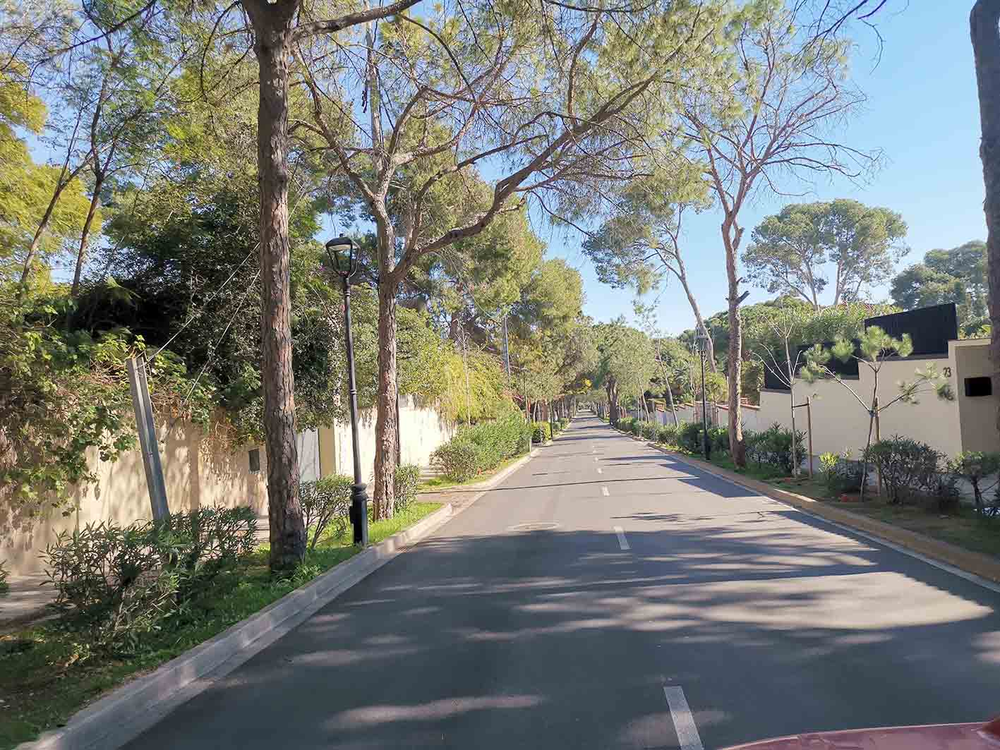
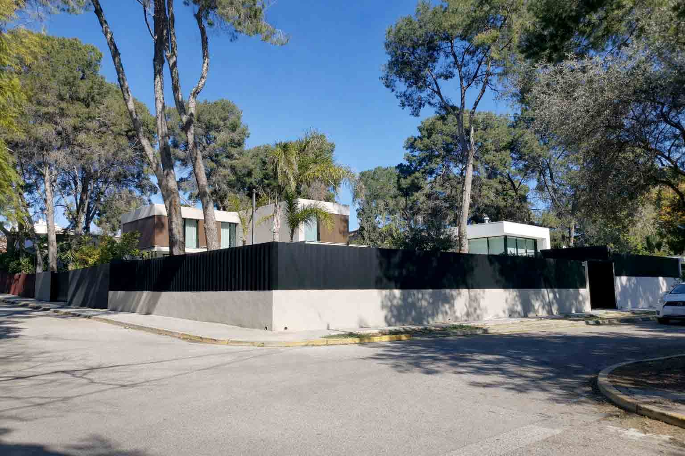
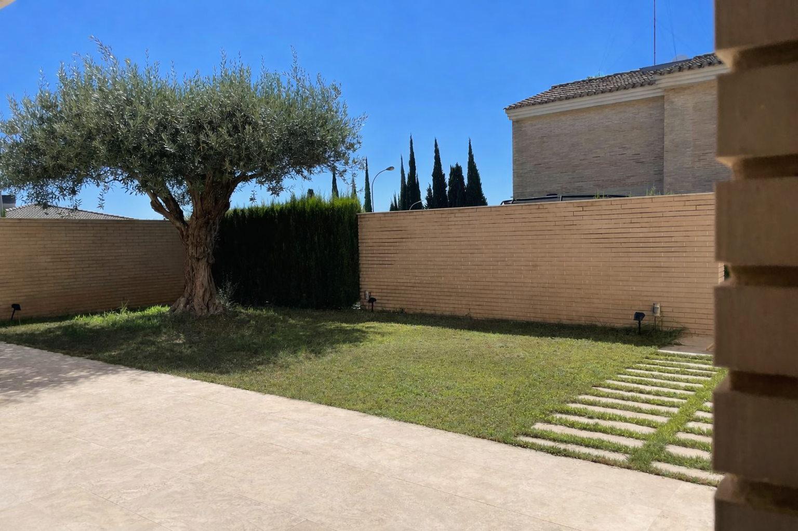
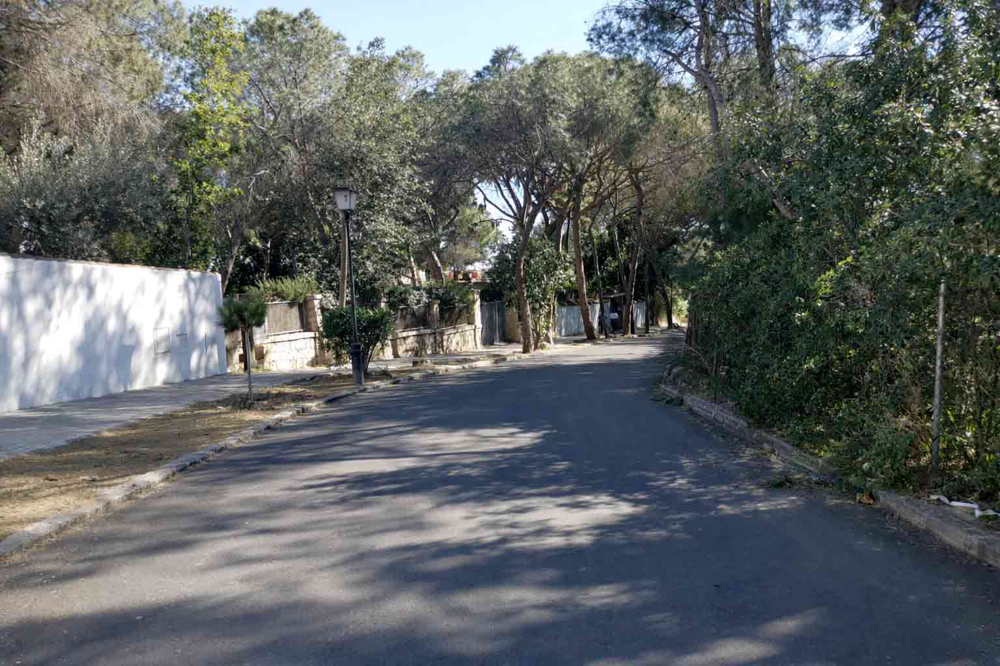
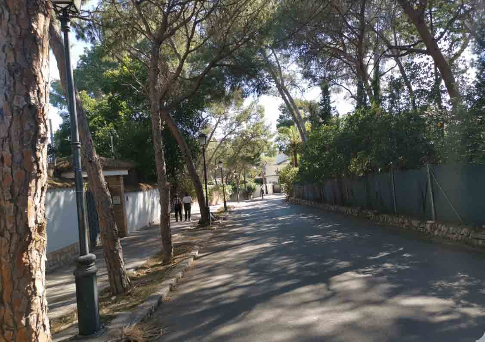
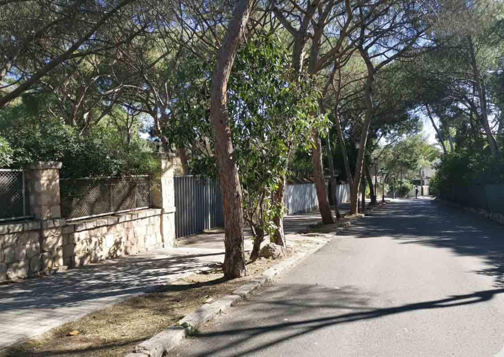

Urban Proximity
Real, fast access to Valencia capital — around 15 minutes to the centre — without surrendering the calm of a residential hillside. Services, healthcare and the city are all within easy reach.

Valencia's finest residential enclave. Historic prestige, low density, and a quality of life that money alone cannot manufacture.
The territory was linked to the historic Baron of Campolivar, whose residence stood on the hilltop connecting what today are Godella and Rocafort. Before it was a residential neighbourhood, it was a baronial estate. Before it was a property market, it was a territory of prestige.
Campolivar is not ostentation — it is consolidated positioning. The predominant profile has historically been business owners and executives, liberal professionals, families with stable economic trajectories, and second generations maintaining or updating family assets. It is an environment where privacy, low density and generational continuity are the norm.
A property here does not justify itself solely by build quality or plot size. It justifies itself through strategic location: minutes from Valencia capital, in an elevated, ventilated and quiet environment, with fast access to services, reference private schools and healthcare — in a zone where supply is limited and qualified demand is constant.


Real, fast access to Valencia capital — around 15 minutes to the centre — without surrendering the calm of a residential hillside. Services, healthcare and the city are all within easy reach.
Detached villas, gardens and generous plots define the streetscape. An elevated, ventilated and quiet environment where privacy is structural, not incidental.
A consolidated, inherited reputation that stretches back generations. Prestige here is not improvised — it is the quiet result of decades of continuity.
Campolivar is not a trend nor a recent development. It is one of Valencia's classic residential zones where prestige is not improvised — it is inherited.Alcalá Hills




We are curating a small number of Campolivar homes. The first listings will appear here shortly.
List Your PropertyOwn a home in Campolivar? List it where qualified, international buyers are already looking.
List Your PropertyWant to know when the first homes go live? Tell us what you are looking for.
Get in TouchExclusive Campolivar is a curated guide, not a crowded portal. We present a small number of homes to an audience of qualified, international buyers researching this exact neighbourhood — the people most likely to value what you are selling.
Alcalá Hills is a curated guide to the residential neighbourhoods that define quality of life around Valencia. We begin in Campolivar — a place we know well — pairing honest local knowledge with a small, carefully chosen selection of homes. No noise, no inflated claims: just the places worth knowing, presented with the care they deserve.